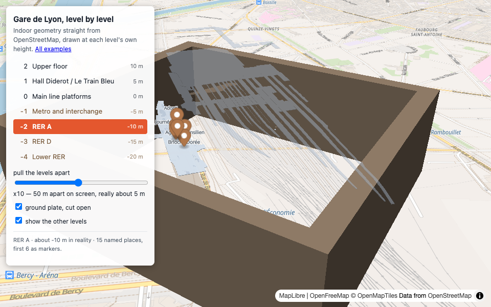
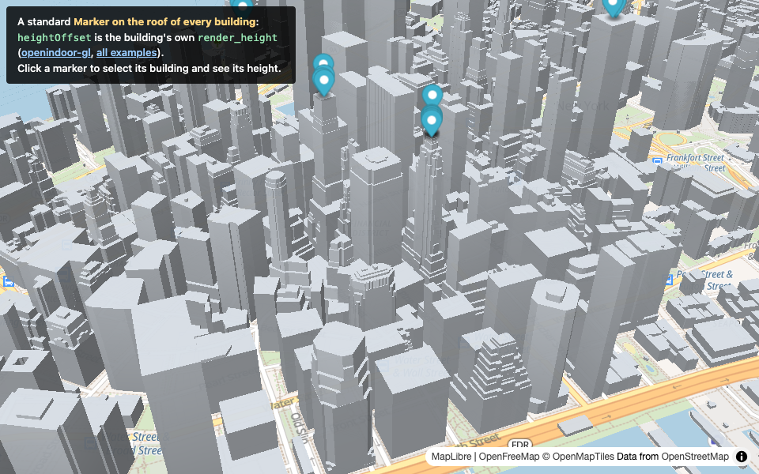
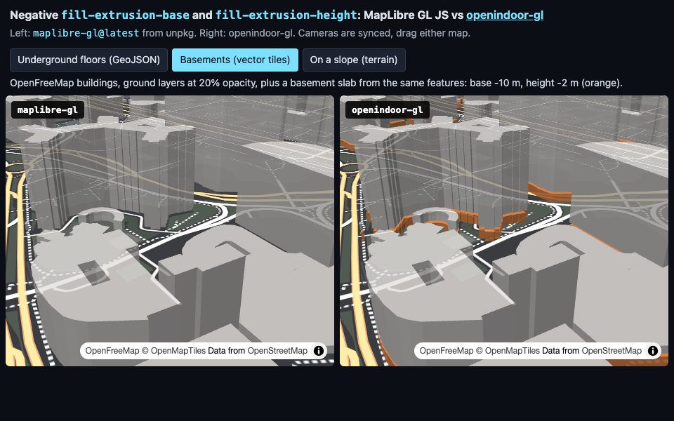

Gare de Lyon, level by level
Seven levels from OpenStreetMap indoor data, four of them below ground, drawn at their own height with
negative fill-extrusion-base. Markers follow the selected level with heightOffset.

Markers on building roofs
A standard Marker on top of every tall building in Lower Manhattan: heightOffset
is the building's own render_height. Popups open at the roof too.

Underground, side by side with MapLibre
Left: the latest maplibre-gl from unpkg. Right: openindoor-gl. Three scenes, synced cameras:
GeoJSON floors, vector-tile basements, a building on a slope with terrain.